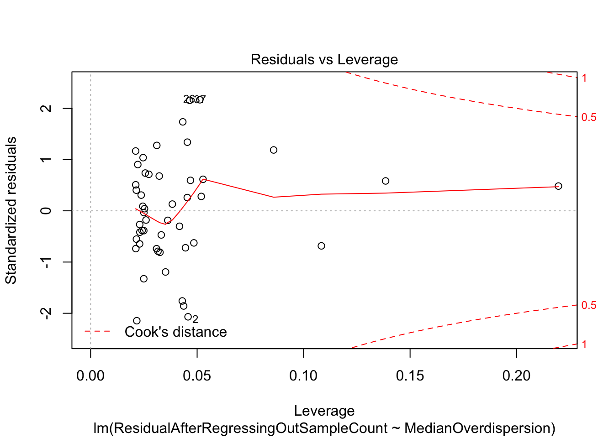

Last updated: 2020-10-25
Checks: 6 1
Knit directory: Comparative_eQTL/analysis/
This reproducible R Markdown analysis was created with workflowr (version 1.5.0). The Checks tab describes the reproducibility checks that were applied when the results were created. The Past versions tab lists the development history.
The R Markdown is untracked by Git. To know which version of the R Markdown file created these results, you’ll want to first commit it to the Git repo. If you’re still working on the analysis, you can ignore this warning. When you’re finished, you can run wflow_publish to commit the R Markdown file and build the HTML.
Great job! The global environment was empty. Objects defined in the global environment can affect the analysis in your R Markdown file in unknown ways. For reproduciblity it’s best to always run the code in an empty environment.
The command set.seed(20190319) was run prior to running the code in the R Markdown file. Setting a seed ensures that any results that rely on randomness, e.g. subsampling or permutations, are reproducible.
Great job! Recording the operating system, R version, and package versions is critical for reproducibility.
Nice! There were no cached chunks for this analysis, so you can be confident that you successfully produced the results during this run.
Great job! Using relative paths to the files within your workflowr project makes it easier to run your code on other machines.
Great! You are using Git for version control. Tracking code development and connecting the code version to the results is critical for reproducibility. The version displayed above was the version of the Git repository at the time these results were generated.
Note that you need to be careful to ensure that all relevant files for the analysis have been committed to Git prior to generating the results (you can use wflow_publish or wflow_git_commit). workflowr only checks the R Markdown file, but you know if there are other scripts or data files that it depends on. Below is the status of the Git repository when the results were generated:
Ignored files:
Ignored: .DS_Store
Ignored: .RData
Ignored: .Rhistory
Ignored: .Rproj.user/
Ignored: WorkingManuscript.zip
Ignored: WorkingManuscript/
Ignored: analysis/.DS_Store
Ignored: analysis/.Rhistory
Ignored: analysis_temp/.DS_Store
Ignored: big_data/
Ignored: code/.DS_Store
Ignored: code/snakemake_workflow/.DS_Store
Ignored: code/snakemake_workflow/.Rhistory
Ignored: data/.DS_Store
Ignored: data/PastAnalysesDataToKeep/.DS_Store
Ignored: figures/
Ignored: output/.DS_Store
Untracked files:
Untracked: analysis/20200907_Response_Point_02.Rmd
Untracked: analysis/20200907_Response_Point_04.Rmd
Untracked: analysis/20200907_Response_Point_07.Rmd
Untracked: analysis/20200907_Response_Point_08.Rmd
Untracked: analysis/20200907_Response_Point_11_2.Rmd
Untracked: analysis/20201012_MakeSourceData.Rmd
Untracked: data/FinalSourceData/
Untracked: data/c5.all.v7.1.symbols.gmt
Untracked: data/c5.all.v7.1.symbols.gmt.categories.tsv.gz
Untracked: data/h.all.v7.1.symbols.gmt
Unstaged changes:
Modified: README.md
Modified: analysis/20200907_Response_OriginalComments.Rmd
Modified: analysis/20200907_Response_Point_06.Rmd
Modified: analysis/20200907_Response_Point_09-2.Rmd
Modified: analysis/20200907_Response_Point_09.Rmd
Modified: analysis/20200907_Response_Point_11.Rmd
Modified: analysis/Final_2_DispersionPlots.Rmd
Modified: analysis/about.Rmd
Modified: analysis_temp/TabulaMuris_analysis2.Rmd
Note that any generated files, e.g. HTML, png, CSS, etc., are not included in this status report because it is ok for generated content to have uncommitted changes.
There are no past versions. Publish this analysis with wflow_publish() to start tracking its development.
Original reviewer point:
What do the authors think these findings mean for study systems outside of humans and captive chimpanzees? Both on the technical level (e.g. sample size), and for how their approach could be helpful outside of these species. Generalizing this approach would broaden the impact and audience of the paper.
First load necessary libraries for analysis…
library(tidyverse)
library(CorShrink)
library(gplots)
library(readxl)
library("org.Hs.eg.db")
library(ggrepel)
library(ggpmisc)
source("../code/CustomFunctions.R")Now, read in data and do analysis… In the code section of this repository, the snakemake has already used the same negative binomial fit model used to calculate overdispersion as described in the mansucript, but for all GTEx tissues using all GTEx v8 samples.
First, let’s read in the data of mean expression estimates and overdispersion estimates from that model fit across all genes across all GTEx tissues and also calculate residual overdispersion
GTEx.Overdispersion.Estimates.fn <- "../output/GtexTissueMatrix.overdispersion.AllModeExtractionSamples.txt.gz"
GTEx.Expression.Estimates.fn <- "../output/GtexTissueMatrix.mu.AllModeExtractionSamples.txt.gz"
MuTable <- read.table(GTEx.Expression.Estimates.fn, header=T, sep='\t', check.names = F, row.names = 1) %>%
rownames_to_column("X") %>%
mutate(gene = gsub("\\.\\d+", "", X, perl=T)) %>% dplyr::select(-X)
OverdispersionTable <- read.table(GTEx.Overdispersion.Estimates.fn, header=T, sep='\t', check.names = F, row.names = 1) %>%
rownames_to_column("X") %>%
mutate(gene = gsub("\\.\\d+", "", X, perl=T)) %>% dplyr::select(-X)
ChimpOverdispersionTable <- read.table("../output/OverdispersionEstimatesFromChimp.txt", header=T, sep='\t')
OverdispersionCombined <- ChimpOverdispersionTable %>%
dplyr::select(ThisStudy_ChimpHeart=Chimp.Overdispersion,
ThisStudy_HumanHeart=Human.Overdispersion,
gene) %>%
left_join(OverdispersionTable, by="gene") %>%
select_if(~sum(!is.na(.)) > 0) %>% tibble::column_to_rownames("gene")
MuCombined <- ChimpOverdispersionTable %>%
dplyr::select(ThisStudy_ChimpHeart=Chimp.Mean.Expression,
ThisStudy_HumanHeart=Human.Mean.Expression,
gene) %>%
left_join(MuTable, by="gene") %>%
select_if(~sum(!is.na(.)) > 0) %>% tibble::column_to_rownames("gene")
GtexColors <- read.table("../data/GTEx_Analysis_TissueColorCodes.txt", sep='\t', header=T, stringsAsFactors = F) %>% mutate(HEX=paste0("#",Color.code))
GtexColors[nrow(GtexColors) + 1,] = c("ThisStudy_ChimpHeart","black", "#000000")
GtexColors[nrow(GtexColors) + 1,] = c("ThisStudy_HumanHeart","black", "#000000")
TissueColorVector <- GtexColors$HEX
names(TissueColorVector)<-GtexColors$TissueDo tissues generally differ in their levels of overdispersion
#Box whisker plot of overdispersion estimates across all genes for all GTEx tissues
Boxplot <- OverdispersionCombined %>%
gather() %>% mutate(TissueColor=TissueColorVector[key]) %>%
ggplot(aes(x=key, y=log(value))) +
geom_boxplot(outlier.shape = NA, aes(fill = key)) +
ylab("overdispersion") +
ylim(c(-6,2)) +
theme_bw() +
theme(axis.text.x = element_text(angle = 90, hjust = 1, vjust=0.5)) +
theme(legend.position="none", axis.title.x=element_blank()) +
scale_fill_manual(values=TissueColorVector) +
guides(color=guide_legend(nrow=2,byrow=TRUE))
BoxplotOk, we can see whole blood is the most overdispersed. This could be consistent with the idea that whole blood is a hetergeneous mix of cell types that is different person to person.
Do these different levels of overdispersion relate to power in eQTL studies?
Here, let’s read in the number of egenes per Gtex tissue from the GTEx website
# Do these different levels of overdispersion relate to power in eQTL studies
# First plot the number eGenes for each tissue, versus number of samples
GtexEgeneCounts <- read_excel("../data/NumberEgenesPerGtexTissue.xlsx") %>%
filter(!Percent.eGenes.Over.Total.expressed==0)
Lm.Plot1 <- GtexEgeneCounts %>%
ggplot(aes(x=`# RNASeq and Genotyped samples`, y=as.numeric(Percent.eGenes.Over.Total.expressed), label=Tissue)) +
geom_point(aes(color=Tissue)) +
geom_smooth(method="lm", formula=y~x, color="red", size=0.5) +
scale_color_manual(values=TissueColorVector) +
geom_text_repel(size=1, aes(color=Tissue)) +
ylab("Fraction eGenes\n(# eGenes / # genes expressed)") +
stat_fit_glance(method = 'lm',
method.args = list(formula = formula),
geom = 'text',
aes(label = paste("P-value = ", signif(..p.value.., digits = 3), sep = "")),
label.x.npc = "right", label.x= "middle", size = 3, label.y="top") +
stat_poly_eq(
aes(label = paste(..eq.label.., ..rr.label.., sep = "*plain(\",\")~")),
label.x.npc = "middle", label.y="top", label.x="right",
formula = formula, parse = TRUE, size = 3) +
theme_bw() +
theme(legend.position = "none")
Lm.Plot1Well it sort of looks like whole blood and testis and some cerebellum and spleen are outliers in number of eGenes, and in directions that are concordant with the idea that more overdispersed tissues have less eQTL power. Let’s test this more explicitly with a linear model using sampleCount and MedianOverdispersion as predictors of eGene count
MedianOverdispersion <- apply(log(OverdispersionCombined), 2, FUN = median, na.rm=T)
DataForLm <- as.data.frame(MedianOverdispersion) %>%
rownames_to_column("Tissue") %>%
right_join(GtexEgeneCounts, by="Tissue") %>%
drop_na()
My.lm <- lm(Percent.eGenes.Over.Total.expressed ~ `# RNASeq and Genotyped samples` + MedianOverdispersion, DataForLm)
summary(My.lm)
Call:
lm(formula = Percent.eGenes.Over.Total.expressed ~ `# RNASeq and Genotyped samples` +
MedianOverdispersion, data = DataForLm)
Residuals:
Min 1Q Median 3Q Max
-0.076886 -0.023411 -0.000178 0.023472 0.078091
Coefficients:
Estimate Std. Error t value Pr(>|t|)
(Intercept) -1.614e-01 3.453e-02 -4.675 2.69e-05 ***
`# RNASeq and Genotyped samples` 8.022e-04 3.174e-05 25.277 < 2e-16 ***
MedianOverdispersion -1.082e-01 1.424e-02 -7.603 1.31e-09 ***
---
Signif. codes: 0 '***' 0.001 '**' 0.01 '*' 0.05 '.' 0.1 ' ' 1
Residual standard error: 0.0371 on 45 degrees of freedom
Multiple R-squared: 0.9385, Adjusted R-squared: 0.9357
F-statistic: 343.2 on 2 and 45 DF, p-value: < 2.2e-16plot(My.lm)Ok that model says MedianOverdispersion is a significant predictor for eGene count, wherein more overdispersed tissues have less eGenes. The diagnostic plots for the model fit look reasonable. Let’s also try regressing out the sampleCount effect and fitting the MedianOverdispersion to the residuals.
#Fit model using just sample count as predictor
My.simpler.lm <- lm(Percent.eGenes.Over.Total.expressed ~ `# RNASeq and Genotyped samples`, DataForLm)
#Save residuals
DataForLm$ResidualAfterRegressingOutSampleCount <- My.simpler.lm$residuals
#Fit MedianOverdispersion to the residuals
LmOnResidual <- lm(ResidualAfterRegressingOutSampleCount ~ MedianOverdispersion, DataForLm)
summary(LmOnResidual)
Call:
lm(formula = ResidualAfterRegressingOutSampleCount ~ MedianOverdispersion,
data = DataForLm)
Residuals:
Min 1Q Median 3Q Max
-0.077908 -0.023497 0.000139 0.022630 0.077540
Coefficients:
Estimate Std. Error t value Pr(>|t|)
(Intercept) -0.24628 0.03250 -7.578 1.25e-09 ***
MedianOverdispersion -0.10816 0.01408 -7.680 8.79e-10 ***
---
Signif. codes: 0 '***' 0.001 '**' 0.01 '*' 0.05 '.' 0.1 ' ' 1
Residual standard error: 0.03671 on 46 degrees of freedom
Multiple R-squared: 0.5619, Adjusted R-squared: 0.5523
F-statistic: 58.99 on 1 and 46 DF, p-value: 8.785e-10plot(LmOnResidual)
Lm.Plot2 <- DataForLm %>%
ggplot(aes(x=MedianOverdispersion, y=ResidualAfterRegressingOutSampleCount)) +
geom_point(aes(color=Tissue)) +
scale_color_manual(values=TissueColorVector) +
geom_text_repel(size=1, aes(label=Tissue, color=Tissue)) +
stat_smooth(method = "lm", col = "red", size=0.5) +
ylab("Residuals") +
stat_poly_eq(
aes(label = paste(..eq.label.., ..rr.label.., sep = "*plain(\",\")~")),
label.x.npc = "middle", label.y="top", label.x="right",
formula = formula, parse = TRUE, size = 3) +
stat_fit_glance(method = 'lm',
method.args = list(formula = formula),
geom = 'text',
aes(label = paste("\n\nP-value = ", signif(..p.value.., digits = 3), sep = "")),
label.x.npc = "right", label.x= "middle", size = 3, label.y="top") +
theme_bw() +
theme(legend.position = "none")
Lm.Plot2Ok, yeah, same result. The trend is significant, and the diagnostic plots point to one outlier, (testis) which clearly isn’t the sole driver of the trend.
So dispersion is a predictor of eQTL mapping power. Let’s also see how it is a predictor of DE analysis power. Let’s compare dispersion estimates
HumanEgenes <- read.delim("../data/GTEX_v8_eGenes/Heart_Left_Ventricle.v8.egenes.txt.gz") %>%
mutate(gene=str_remove(gene_id, "\\.\\d+$"))
OutputDE <- '../output/Final/TableS2.tab'
DE.results <- read.delim(OutputDE, sep='\t', stringsAsFactors = F)
ChimpOverdispersionTable %>%
mutate(Mean=Human.Residual+Chimp.Residual) %>%
left_join(HumanEgenes) %>%
dplyr::select(Mean,Human.Residual, gene, qval) %>%
ggplot(aes(x=Mean, y=-log10(qval))) +
geom_point(alpha=0.05) +
# geom_hex(bins=100) +
scale_fill_viridis_c() +
theme_bw()formula <- y ~ x
DispersionVsDE <- ChimpOverdispersionTable %>%
mutate(Mean=Human.Residual+Chimp.Residual) %>%
# mutate(Mean=log(Human.Overdispersion) + log(Chimp.Overdispersion)) %>%
left_join(DE.results, by=c("gene"="Ensembl_geneID")) %>%
dplyr::select(Mean, Chimp.Residual, gene, adj.P.Val) %>%
ggplot(aes(y=Mean, x=-log10(adj.P.Val))) +
geom_point(alpha=0.05) +
# geom_hex(bins=100) +
geom_smooth(method='rlm', formula=formula) +
ylim(c(-6,6)) +
ylab("Genewise dispersion") +
xlab("Interspecies DE -log10(P)") +
stat_poly_eq(
aes(label = paste(..eq.label.., ..rr.label.., sep = "*plain(\",\")~")),
label.x.npc = "middle", label.y="top", label.x="right",
formula = formula, parse = TRUE, size = 3) +
stat_fit_glance(method = 'lm',
method.args = list(formula = formula),
geom = 'text',
aes(label = paste("\n\nP-value = ", signif(..p.value.., digits = 3), sep = "")),
label.x.npc = "right", label.x= "middle", size = 3, label.y="top") +
theme_bw()
DispersionVsDEMake plots
ggsave("../figures/OriginalArt/ResponseToReviewers.Overdispersion.boxplots.pdf", Boxplot, height=4, width=8)
ggsave("../figures/OriginalArt/ResponseToReviewers.Overdispersion.lm.2.pdf", Lm.Plot2, height=3, width=4)
ggsave("../figures/OriginalArt/ResponseToReviewers.Overdispersion.lm.1.pdf", Lm.Plot1, height=3, width=4)
sessionInfo()R version 3.6.1 (2019-07-05)
Platform: x86_64-apple-darwin15.6.0 (64-bit)
Running under: macOS Catalina 10.15.5
Matrix products: default
BLAS: /Library/Frameworks/R.framework/Versions/3.6/Resources/lib/libRblas.0.dylib
LAPACK: /Library/Frameworks/R.framework/Versions/3.6/Resources/lib/libRlapack.dylib
locale:
[1] en_US.UTF-8/en_US.UTF-8/en_US.UTF-8/C/en_US.UTF-8/en_US.UTF-8
attached base packages:
[1] parallel stats4 stats graphics grDevices utils datasets
[8] methods base
other attached packages:
[1] cowplot_1.0.0 gridExtra_2.3 edgeR_3.26.8
[4] limma_3.40.6 MASS_7.3-53 ggpmisc_0.3.6
[7] ggrepel_0.8.1 org.Hs.eg.db_3.8.2 AnnotationDbi_1.46.1
[10] IRanges_2.18.3 S4Vectors_0.22.1 Biobase_2.44.0
[13] BiocGenerics_0.30.0 readxl_1.3.1 gplots_3.0.1.1
[16] CorShrink_0.1-6 forcats_0.4.0 stringr_1.4.0
[19] dplyr_1.0.2 purrr_0.3.3 readr_1.3.1
[22] tidyr_1.0.0 tibble_3.0.3 ggplot2_3.3.2
[25] tidyverse_1.3.0
loaded via a namespace (and not attached):
[1] colorspace_1.4-1 ellipsis_0.3.0 rprojroot_1.3-2 corpcor_1.6.9
[5] fs_1.3.1 rstudioapi_0.10 farver_2.0.3 bit64_0.9-7
[9] fansi_0.4.0 lubridate_1.7.9 xml2_1.2.2 splines_3.6.1
[13] codetools_0.2-16 R.methodsS3_1.7.1 pscl_1.5.2 doParallel_1.0.15
[17] knitr_1.26 polynom_1.4-0 jsonlite_1.6 workflowr_1.5.0
[21] broom_0.7.0 Rmpfr_0.7-2 ashr_2.2-39 dbplyr_1.4.2
[25] R.oo_1.23.0 compiler_3.6.1 httr_1.4.1 backports_1.1.5
[29] assertthat_0.2.1 Matrix_1.2-18 cli_2.0.0 later_1.0.0
[33] htmltools_0.4.0 tools_3.6.1 gmp_0.5-13.5 gtable_0.3.0
[37] glue_1.4.2 reshape2_1.4.3 Rcpp_1.0.5 cellranger_1.1.0
[41] vctrs_0.3.4 nlme_3.1-143 gdata_2.18.0 iterators_1.0.12
[45] xfun_0.11 CVXR_0.99-7 scs_1.3-2 rvest_0.3.5
[49] lifecycle_0.2.0 ECOSolveR_0.5.3 gtools_3.8.1 scales_1.1.1
[53] hms_0.5.2 promises_1.1.0 yaml_2.2.0 memoise_1.1.0
[57] stringi_1.4.3 RSQLite_2.1.4 SQUAREM_2017.10-1 corrplot_0.84
[61] foreach_1.4.7 caTools_1.17.1.3 truncnorm_1.0-8 shape_1.4.5
[65] rlang_0.4.7 pkgconfig_2.0.3 bitops_1.0-6 evaluate_0.14
[69] lattice_0.20-38 labeling_0.3 bit_1.1-14 tidyselect_1.1.0
[73] plyr_1.8.6 magrittr_1.5 R6_2.4.1 generics_0.0.2
[77] DBI_1.0.0 mgcv_1.8-31 pillar_1.4.6 haven_2.2.0
[81] withr_2.1.2 mixsqp_0.2-2 modelr_0.1.5 crayon_1.3.4
[85] KernSmooth_2.23-16 rmarkdown_1.18 locfit_1.5-9.1 grid_3.6.1
[89] blob_1.2.0 git2r_0.26.1 reprex_0.3.0 digest_0.6.23
[93] httpuv_1.5.2 R.utils_2.9.0 munsell_0.5.0 glmnet_3.0-2
[97] viridisLite_0.3.0